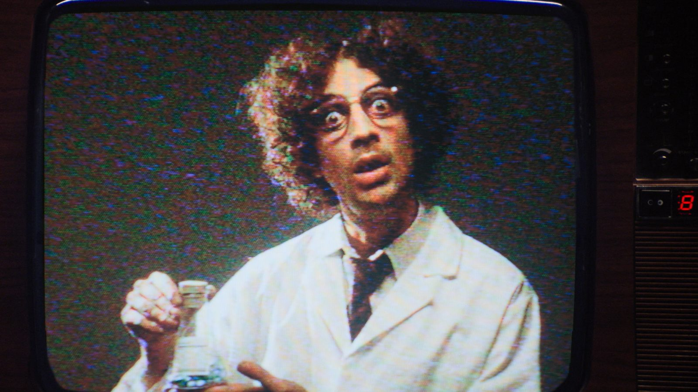

Nothing But Thieves
Baby Kool (Evelyn)
This is a working example of a treatment page. Everything here is written in Markdown — see `docs/treatments.md` for the full syntax.
The idea begins in the corridor. We hold longer than is comfortable, and she doesn't acknowledge the camera until the second beat. Everything after that is a chase she doesn't know she's in.
Opening — the corridor
We open on a slow push. No cut, no music — just the room. The light shifts from blue to sodium somewhere around the eight second mark and we never explain why.


The camera is on a dolly, not a gimbal. That matters — it gives the movement a mechanical certainty that handheld can't fake. If we can't get a dolly we shoulder mount it and shoot at 48fps to take the human jitter out.

She turns at the exact moment the light changes. Not before. The cut is the
audience catching up.
Performance
The performance should be close to a person remembering something rather than performing something. Wardrobe is nearly invisible — dark, matte, no logos, no texture that catches the light.
Key notes on direction:
- We never see her full face until the last thirty seconds
- Movement is always towards something, never away
- She doesn't blink on the turn
- The final look to camera is held for four full seconds
The turn
This is the moment the piece turns from observation into address. It should feel like the audience has been caught looking.

Grade and sound
The grade is desaturated except for the sodium shift in the middle third. That orange is the only colour in the film and it should feel like an intrusion.
Sound design carries the second half. No score until the last frame — and even then, only a single held note that resolves as the image goes to black.